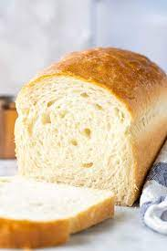

White Bread Recipe

WHY YOU SHOULD BE MAKING THIS WHITE BREAD LOAF RECIPE!
Make no mistake, this homemade bread recipe is simple to make.
Incredibly soft and delicious, with just a touch of sweetness, it’s easily the best white bead I’ve ever tasted!
Really substantial, unlike the sad, flimsy store-bought white bread.
It’s free of all the sodium and preservatives of store-bought bread, and it’s made with simple ingredients. What’s not to love?
This recipe provides STEP BY STEP instructions, on how to make the perfect loaf of bread
Ingredients
Instructions
- Place the water in the mixer bowl of your stand mixer.
- Stir in the honey to dissolve, and sprinkle the yeast over the water. Gently stir to mix.
- Allow the yeast to sit in a warm place for about 15 minutes, until it’s activated and becomes frothy. This could take longer if your yeast was in the freezer. If the yeast doesn’t activate (no frothy bubbles), then your yeast is likely too old and you will need it replaced with fresh yeas
- Once the yeast is activated, you’re ready to make the bread dough.
- To the proofed yeast mixture, add the flour, warm water, salt, honey, citric acid and melted butter.
- Using a dough whisk or a spatula, mix the ingredients to form a rough dough.
- Place the bowl in the mixer with a kneading hook attached, and knead the dough on low speed for about 2-5 minutes, until the dough comes together to form a ball.
- Increase the speed by 1 level (speed 3 in a kitchen aid mixer) and knead the dough for a further 12-15 minutes until it’s smooth and elastic.
- While the dough is kneading, check on it every few minutes to make sure it’s kneading well, and is not too dry or too wet.
- If the dough is sticking to the sides of the bowl, then it’s too wet, so add a little extra flour (a dusting at a time), to get the right texture. To check if it’s at the right consistency – lift the kneading hook from the bowl, and check if the dough only sticks to the bottom of the bowl. If yes, then the moisture is perfect. If the dough isn’t sticking to the bottom of the bowl however, you may need to add a little extra water (just ½ tsp at a time), to get the right consistency. The dough should be smooth, a little soft and a little tacky to the touch.
- Once the dough is kneaded, remove the dough hook and fold the dough over a few times by hand, to get a smooth ball. Then place it in a lightly oiled bowl, and cover with plastic wrap. Let the dough proof for about 1 hour until it has doubled in size.
- Transfer this into the prepared loaf pan, seam side down, and press the dough into the pan. Make sure it’s evenly pressed into the bottom of the pan. Loosely cover the loaf pan with plastic wrap and let it proof again in a warm place, for about 45 minutes – 1 hour.
- The top of the dough should rise about 1 inch above the rim of your bread loaf pan (when looking from the side), and when you leave an indentation in the dough with your finger, the indentation should remain, and not bounce back (read the post and see pictures for more details).
- Preheat oven to 375°F, during the last 30 minutes of the second proofing time. It’s best for the oven to be preheated to the right temperature for at least 20 minutes, before baking the bread.
- When the bread loaf is ready and the oven has preheated, place the loaf pan in the middle of the oven, and bake for 45 minutes. It’s done when it sounds hollow when the bread is tapped on top, OR when the internal temperature has reached 195°F.
- Remove the pan from the oven, and keep it in a warm place (away from drafts) to cool. After about 10 minutes, remove the bread from the pan and keep it on a wire rack to cool down completely. The bread is now ready to be served.
- Keep the loaf in a bread box at room temperature for upto 4 – 5 days, or slice and keep in the freezer for up to 1 month.